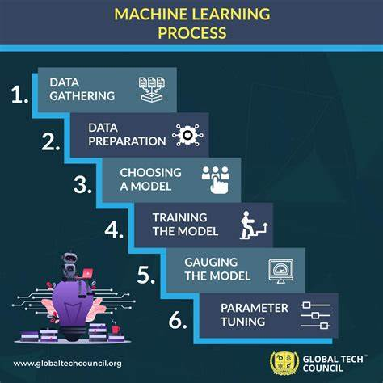
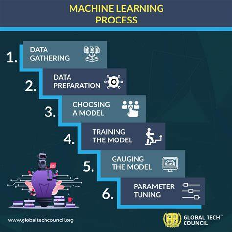

Machine Learning (ML)
Machine learning (ML) is a branch of artificial intelligence (AI) and computer science that focuses on using data and algorithms to enable AI to imitate the way that humans learn, gradually improving its accuracy.
How does machine learning work?
UC Berkeley breaks out the learning system of a machine learning algorithm into three main parts.
- A Decision Process: In general, machine learning algorithms are used to make a prediction or classification. Based on some input data, which can be labeled or unlabeled, your algorithm will produce an estimate about a pattern in the data.
- An Error Function: An error function evaluates the prediction of the model. If there are known examples, an error function can make a comparison to assess the accuracy of the model.
- A Model Optimization Process: If the model can fit better to the data points in the training set, then weights are adjusted to reduce the discrepancy between the known example and the model estimate. The algorithm will repeat this iterative “evaluate and optimize” process, updating weights autonomously until a threshold of accuracy has been met.
For more information, visit the following links:
 
